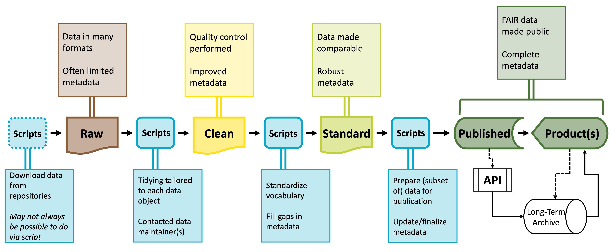

Reproducibility Best Practices
Overview
As we set out to engage with the synthesis skills this course aims to offer, it will be helpful to begin with a careful consideration of “reproducibility.” Because synthesis projects draw data from many sources and typically involve many researchers working in concert, reproducibility is particularly important. In individual projects, adhering to reproducibility best practices is certainly a good goal but failing to do so for synthesis projects can severely limit the work in a more significant way than for those individual projects. “Reproducibility” is a wide sphere encompassing many different–albeit related–topics so it can be challenging to feel well-equipped to evaluate how well we are following these guidelines in our own work. In this module, we will cover a few fundamental facets of reproducibility and point to some considerations that may encourage you to push yourself to elevate your practices to the next level.
Learning Objectives
After completing this module you will be able to:
- Identify core tenets of reproducibility best practices
- Create robust workflow documentation
- Implement reproducible project organization strategies
- Discuss methods for improving the reproducibility of your code products
- Summarize FAIR and CARE data principles
- Evaluate the FAIR/CAREness of your work
Preparation
There is no suggested preparatory work for this module.
Lego Activity
Before we dive into the world of reproducibility for synthesis projects, we thought it would be fun (and informative!) to begin with an activity that is a useful analogy for the importance of some of the concepts we’ll cover today. The LEGO activity was designed by Mary Donaldson and Matt Mahon at the University of Glasgow. The full materials can be accessed here.
Project Documentation & Organization
Much of the popular conversation around reproducibility centers on reproducibility as it pertains to code. That is definitely an important facet but before we write even a single line it is vital to consider project-wide reproducibility. “Perfect” code in a project that isn’t structured thoughtfully can still result in a project that isn’t reproducible. On the other hand, “bad” code can be made more intelligible when it is placed in a well-documented/organized project!
Documentation
Documenting a project can feel daunting but it is often not as hard as one might imagine and always well worth the effort! One simple practice you can adopt to dramatically improve the reproducibility of your project is to create a “README” file in the top-level of your project’s folder system. This file can be formatted however you’d like but generally READMEs should include:
- Project overview written in plain language
- Basic table of contents for the primary folders in your project folder
- Brief description of the file naming scheme you’ve adopted for this project.
Your project’s README becomes the ‘landing page’ for those navigating your repository and makes it easy for team members to know where documentation should go (in the README!). You may also choose to create a README file for some of the sub-folders of your project. This can be particularly valuable for your “data” folder(s) as it is an easy place to store data source/provenance information that might be overwhelming to include in the project-level README file.
Finally, you should choose a place to keep track of ideas, conversations, and decisions about the project. While you can take notes on these topics on a piece of paper, adopting a digital equivalent is often helpful because you can much more easily search a lengthy document when it is machine readable. We will discuss GitHub during the Version Control module but GitHub offers something called Issues that can be a really effective place to record some of this information.
Fundamental Structure

The simplest way of beginning a reproducible project is adopting a good file organization system. There is no single “best” way of organizing your projects’ files as long as you are consistent. Consistency will make your system–whatever that consists of–understandable to others.
Here are some rules to keep in mind as you decide how to organize your project:
- Use one folder per project
Keeping all inputs, outputs, and documentation in a single folder makes it easier to collaborate and share all project materials. Also, most programming applications (RStudio, VS Code, etc.) work best when all needed files are in the same folder.
Note that how you define “projct” may affect the number of folders you need! Some synthesis projects may separate data harmonization into its own project while for others that same effort might not warrant being considered as a separate project. Similarly, you may want to make a separate folder for each manuscript your group plans on writing so that the code for each paper is kept separate.
- Organize content with sub-folders
Putting files that share a purpose or source into logical sub-folders is a great idea! This makes it easy to figure out where to put new content and reduces the effort of documenting project organization. Don’t feel like you need to use an intricate web of sub-folders either! Just one level of sub-folders is enough for many projects.
- Craft informative file names
An ideal file name should give some information about the file’s contents, purpose, and relation to other project files. Some of that may be reinforced by folder names, but the file name itself should be inherently meaningful. This lets you change folder names without fear that files would also need to be re-named.
Naming Tips
We’ve brought up the importance of naming several times already but haven’t actually discussed the specifics of what makes a “good” name for a file or folder. Consider the adopting some (or all!) of the file name tips we outline below.
Names should be sorted by a computer and human in the same way
Computers sort files/folders alphabetically and numerically. Sorting alphabetically rarely matches the order scripts in a workflow should be run. If you add step numbers to the start of each file name the computer will sort the files in an order that makes sense for the project. You may also want to “zero pad” numbers so that all numbers have the same number of digits (e.g., “01” and “10” vs. “1” and “10”).
Names should avoid spaces and special characters
Spaces and special characters (e.g., é, ü, etc.) cause errors in some computers (particularly Windows operating systems). You can replace spaces with underscores or hyphens to increase machine readability. Avoid using special characters as much as possible. You should also be consistent about casing (i.e., lower vs. uppercase).
Names should use consistent delimiters
Delimiters are characters used to separate pieces of information in otherwise plain text. Underscores are a commonly used example of this. If a file/folder name has multiple pieces of information, you can separate these with a delimiter to make them more readable to people and machines. For example, you could name a folder “coral_reef_data” which would be more readable than “coralreefdata”.
You may also want to use multiple delimiters to indicate different things. For instance, you could use underscores to differentiate categories and then use hyphens instead of spaces between words.
Names should use “slugs” to connect inputs and outputs
Slugs are human-readable, unique pieces of file names that are shared between files and the outputs that they create. Maybe a script is named “02_tidy.R” and all of the data files it creates are named “02_…”. Weird or unlikely outputs are easily traced to the scripts that created them because of their shared slug.
Organizing Example
These tips are all worthwhile but they can feel a little abstract without a set of files firmly in mind. Let’s consider an example synthesis project where we incrementally change the project structure to follow increasing more of the guidelines we suggest above.
Positives
- All project files are in one folder
Areas for Improvement
- No use of sub-folders to divide logically-linked content
- File names lack key context (e.g., workflow order, inputs vs. outputs, etc.)
- Inconsistent use of delimiters
Positives
- Sub-folders used to divide content
- Project documentation included in top level (README and license files)
Areas for Improvement
- File names still inconsistent
- File names contain different information in different order
- Mixed use of delimiters
- Many file names include spaces
Positives
- Most file names contain context
- Standardized use of casing and–within sub-folder–consistent delimiters used
Areas for Improvement
- Workflow order “guessable” but not explicit
- Unclear which files are inputs / outputs (and of which scripts)
Positives
- Scripts include zero-padded numbers indicating order of operations
- Inputs / outputs share zero padded slug with source script
- Report file names machine sorted from least to most recent (top to bottom)
Areas for Improvement
- Depending on sub-folder complexity, could add sub-folder specific README files
- Graph file names still include spaces
Organization Recommendations
If you integrate any of the concepts we’ve covered above you will find the reproducibility and transparency of your project will greatly increase. However, if you’d like additional recommendations we’ve assembled a non-exhaustive set of additional “best practices” that you may find helpful.
Never Edit Raw Data
First and foremost, it is critical that you never edit the raw data directly. If you do need to edit the raw data, use a script to make all needed edits and save the output of that script as a separate file. Editing the raw data directly without a script or using a script but overwriting the raw data are both incredibly risky operations because your create a file that “looks” like the raw data (and is likely documented as such) but differs from what others would have if they downloaded the ‘real’ raw data personally.
Separate Raw and Processed Data
In the same vein as the previous best practice, we recommend that you separate the raw and processed data into separate folders. This will make it easier to avoid accidental edits to the raw data and will make it clear what data are created by your project’s scripts; even if you choose not to adopt a file naming convention that would make this clear.
Quarantine External Outputs
This can sound harsh, but it is often a good idea to “quarantine” outputs received from others until they can be carefully vetted. This is not at all to suggest that such contributions might be malicious! As you embrace more of the project organization recommendations we’ve described above outputs from others have more and more opportunities to diverge from the framework you establish. Quarantining inputs from others gives you a chance to rename files to be consistent with the rest of your project as well as make sure that the style and content of the code also match (e.g., use or exclusion of particular packages, comment frequency and content, etc.)
Reproducible Coding
Now that you’ve organized your project in a reasonable way and documented those choices, we can move on to principles of reproducible coding! Doing your data operations with scripts is more reproducible than doing those operations without a programming language (i.e., with Microsoft Excel, Google Sheets, etc.). However, scripts are often written in a way that is not reproducible. A recent study aiming to run 2,000 project’s worth of R code found that 74% of the associated R files failed to complete without error (Trisovic et al. 2022). Many of those errors involve coding practices that hinder reproducibility but are easily preventable by the original code authors.

When your scripts are clear and reproducibly-written you will reap the following benefits:
- Returning to your code after having set it down for weeks/months is much simpler
- Collaborating with team members requires less verbal explanation
- Sharing methods for external result validation is more straightforward
- In cases where you’re developing a novel method or workflow, structuring your code in this way will increase the odds that someone outside of your team will adopt your strategy
Code and the Stages of Data
You’ll likely need a number of scripts to accomplish the different stages of preparing a synthesized dataset. All of these scripts together are often called a “workflow.” Each script will meet a specific need and its outputs will be the inputs of the next script. These intermediary data products are sometimes useful in and of themselves and tend to occur and predictable points that exist in most code workflows.
Raw data will be parsed into cleaned data–often using idiosyncratic or dataset-specific scripts–which is then processed into standardized data which can then be further parsed into published data products. Because this process results in potentially many scripts, coding reproducibly is vital to making this workflow intuitive and easy to maintain.
You don’t necessarily need to follow all of the guidelines described below but in general, the more of these guidelines you follow the easier it will be to make needed edits, onboard new teammembers, maintain the workflow in the long term, and generally maximize the value of your work to yourself and others!

Packages, Namespacing, and Software Versions
An under-appreciated facet of reproducible coding is a record of what code packages are used in a particular script and the version number of those packages. Packages evolve over time and code that worked when using one version of a given package may not work for future versions of that same package. Perpetually updating your code to work with the latest package versions is not sustainable but recording key information can help users set up the code environment that does work for your project.
Load Libraries Explicitly
It is important to load libraries at the start of every script. In some languages (like Python) this step is required but in others (like R) this step is technically “optional” but disastrous to skip. It is safe to skip including the installation step in your code because the library step should tell code-literate users which packages they need to install.
For instance you might begin each script with something like:
# Load needed libraries
library(dplyr); library(magrittr); library(ggplot2)
# Get to actual work
. . .In R the semicolon allows you to put multiple code operations in the same line of the script. Listing the needed libraries in this way cuts down on the number of lines while still being precise about which packages are needed in the script.
If you are feeling generous you could use the librarian R package to install packages that are not yet installed and simultaneously load all needed libraries. Note that users would still need to install librarian itself but this at least limits possible errors to one location. This is done like so:
# Load `librarian` package
library(librarian)
# Install missing packages and load needed libraries
shelf(dplyr, magrittr, ggplot2)
# Get to actual work
. . .Function Namespacing
It is also strongly recommended to “namespace” functions everywhere you use them. In R this is technically optional but it is a really good practice to adopt, particularly for functions that may appear in multiple packages with the same name but do very different operations depending on their source. In R the ‘namespacing operator’ is two colons.
# Use the `mutate` function from the `dplyr` package
dplyr::mutate(. . .)An ancillary benefit of namespacing is that namespaced functions don’t need to have their respective libraries loaded. Still good practice to load the library though!
Package Versions
While working on a project you should use the latest version of every needed package. However, as you prepare to publish or otherwise publicize your code, you’ll need to record package versions. R provides the sessionInfo function (from the utils package included in “base” R) which neatly summarizes some high level facets of your code environment. Note that for this method to work you’ll need to actually run the library-loading steps of your scripts.
For more in-depth records of package versions and environment preservation–in R–you might also consider the renv package or the packrat package.
Script Organization
Every change to the data between the initial raw data and the finished product should be scripted. The ideal would be that you could hand someone your code and the starting data and have them be able to perfectly retrace your steps. This is not possible if you make unscripted modifications to the data at any point!
You may wish to break your scripted workflow into separate, modular files for ease of maintenance and/or revision. This is a good practice so long as each file fits clearly into a logical/thematic group (e.g., data cleaning versus analysis).
File Paths
When importing inputs or exporting outputs we need to specify “file paths”. These are the set of folders between where your project is ‘looking’ and where the input/output should come from/go. The figure from Trisovic et al. (2022) shows that file path and working directory errors are a substantial barrier to code that can be re-run in clean coding environments. Consider the following ways of specifying file paths from least to most reproducible.
Absolute Paths
The worst way of specifying a file path is to use the “absolute” file path. This is the path from the root of your computer to a given file. There are many issues here but the primary one is that absolute paths only work for one computer! Given that only one person can even run lines of code that use absolute paths, it’s not really worth specifying the other issues.
Example
# Read in bee community data
my_df <- read.csv(file = "~/Users/lyon/Documents/Grad School/Thesis (Chapter 1)/Data/bees.csv")Manually Setting the Working Directory
Marginally better than using the absolute path is to set the working directory to some location. This may look neater than the absolute path option but it actually has the same point of failure: Both methods only work for one computer!
Example
# Set working directory
setwd(dir = "~/Users/lyon/Documents/Grad School/Thesis (Chapter 1)")
# Read in bee community data
my_df <- read.csv(file = "Data/bees.csv")Relative Paths
Instead of using absolute paths or manually setting the working directory you can use “relative” file paths! Relative paths assume all project content lives in the same folder.
This is a safe assumption because it is the most fundamental tenet of reproducible project organization! The strength of relative paths is actually a serious contributing factor for why it is good practice to use a single folder.
Example
# Read in bee community data
my_df <- read.csv(file = "Data/bees.csv")- 1
- Parts of file path specific to each user are automatically recognized by the computer
Operating System-Flexible Relative Paths
The “better” example is nice but has a serious limitation: it hard coded the type of slash between file path elements. This means that only computers of the same operating system as the code author could run that line.
We can use functions to automatically detect and insert the correct slashes though!
Example
# Read in bee community data
my_df <- read.csv(file = file.path("Data", "bees.csv"))File Path Exception
Generally, the labels of the above tab panels are correct (i.e., it is better to use OS-agnostic relative paths). However, there is an important possible exception: how do you handle file paths when the data can’t live in the project folder? A common example of this is when data are stored in a cloud-based system (e.g., Dropbox, Box, etc.) and accessed via a “synced” folder in each local computer. Downloading files is thus unnecessary but the only way to import data from or export outputs to this folder is to specify an absolute file path unique to each user (even though the folders inside the main synced folder are shared among users).
The LTER Scientific Computing team (members here) has created a nice tutorial on this topic but to summarize you should take the following steps:
- Store user-specific information in a JSON file
- Consider using
ltertools::make_json
- Consider using
- Tell Git to ignore that file
- Write scripts to read this file and access user-specific information from it
Following these steps allows you to use absolute paths to the synced folder while enabling relative paths everywhere else. Because the user-specific information is stored in a file ignored by Git you also don’t have to comment/uncomment your absolute path (or commit that ‘change’).
Code Style
When it comes to code style, the same ‘rule of thumb’ applies here that applied to project organization: virtually any system will work so long as you (and your team) are consistent! That said, there are a few principles worth adopting if you have not already done so.
Use concise and descriptive object names
It can be difficult to balance these two imperatives but short object names are easier to re-type and visually track through a script. Descriptive object names on the other hand are useful because they help orient people reading the script to what the object contains.
Don’t be afraid of empty space!
Scripts are free to write regardless of the number of lines so do not feel as though there is a strict character limit you need to keep in mind. Cramped code is difficult to read and thus can be challenging to share with others or debug on your own. Inserting an empty line between coding lines can help break up sections of code and putting spaces before and after operators can make reading single lines much simpler.
Code Comments
A “comment” in a script is a human readable, non-coding line that helps give context for the code. In R (and Python), comment lines start with a hashtag (#). Including comments is a low effort way of both (A) creating internal documentation for the script and (B) increasing the reproducibility of the script. It is difficult to include “too many” comments, so when in doubt: add more comments!
There are two major strategies for comments and either or both might make sense for your project.
“What” Comments
Comments describe what the code is doing.
- Benefits: allows team members to understand workflow without code literacy
- Risks: rationale for code not explicit
# Remove all pine trees from dataset
no_pine_df <- dplyr::filter(full_df, genus != "Pinus")“Why” Comments
Comments describe rationale and/or context for code.
- Benefits: built-in documentation for team decisions
- Risks: assumes everyone can read code
# Cone-bearing plants are not comparable with other plants in dataset
no_pine_df <- dplyr::filter(full_df, genus != "Pinus")Consider Custom Functions
In most cases, duplicating code is not good practice. Such duplication risks introducing a typo in one copy but not the others. Additionally, if a decision is made later on that requires updating this section of code, you must remember to update each copy separately.
Instead of taking this copy/paste approach, you could consider writing a “custom” function that fits your purposes. All instances where you would have copied the code now invoke this same function. Any error is easily tracked to the single copy of the function and changes to that step of the workflow can be accomplished in a centralized location.
Function Recommendations
We have the following ‘rules of thumb’ for custom function use:
- If a given operation is duplicated 3 or more times within a project, write a custom function
Functions written in this case can be extremely specific and–though documentation is always a good idea–can be a little lighter on documentation. Note that the reason you can reduce the emphasis on documentation is only because of the assumption that you won’t be sharing the function widely. If you do decide the function could be widely valuable you would need to add the needed documentation post hoc.
- Write functions defensively
When you write custom functions, it is really valuable to take the time to write them defensively. In this context, “defensively” means that you anticipate likely errors and write your own informative/human readable error messages. Let’s consider a simplified version of a function from the ltertools R package for calculating the coefficient of variation (CV).
The coefficient of variation is equal to the standard deviation divided by the mean. Fortunately, R provides functions for calculating both of these already and both expect numeric vectors. If either of those functions is given a non-number you get the following warning message: “In mean.default(x =”…“) : argument is not numeric or logical: returning NA”.
Someone with experience in R may be able to interpret this error but for many users this error message is completely opaque. In the function included below however we can see that there is a simpler, more human readable version of the error message and the function is stopped before it can ever reach the part of the code that would throw the warning message included above.
cv <- function(x){
# Error out if x is not numeric
if(is.numeric(x) != TRUE)
stop("`x` must be numeric")
# Calculate CV
sd(x = x) / mean(x = x)The key to defensive programming is to try to get functions to fail fast and fail informatively as soon as a problem is detected! This is easier to debug and understand for coders with a range of coding expertise and–for complex functions–can save a ton of useless processing time when failure is guaranteed at a later step.
- If a given operation is duplicated 3 or more times across projects, consider creating an R package
Creating an R package can definitely seem like a daunting task but duplication across projects carries the same weaknesses of excessive duplication within a project. However, when duplication is across projects, not even writing a custom function saves you because you need to duplicate that function’s script for each project that needs the tool.
Hadley Wickham and Jenny Bryan have written a free digital book on this subject that demystifies a lot of this process and may make you feel more confident to create your own R package if/when one is needed.
If you do take this path, you can simply install your package as you would any other in order to have access to the operations rather than creating duplicates by hand.
FAIR & CARE Data Principles
Data availability, data size, and demand for transparency by government and funding agencies are all steadily increasing. While ensuring that your project and code practices are reproducible is important, it is also important to consider how open and reproducible your data are as well. Synthesis projects are in a unique position here because synthesis projects use data that may have been previously published on and/or be added to a public data repository by the original data collectors. However, synthesis projects take data from these different sources and wrangle it such that the different data sources are comparable to one another. These ‘synthesis data products’ can be valuable to consider archiving in a public repository to save other researchers from needing to re-run your entire wrangling workflow in order to get the data product. In either primary or synthesis research contexts there are several valuable frameworks to consider as data structure and metadata are being decided. Among these are the FAIR and CARE data principles.
FAIR
FAIR is an acronym for Findable Accessible Interpoerable and Reusable. Each element of the FAIR principles can be broken into a set of concrete actions that you can take throughout the lifecycle of your project to ensure that your data are open and transparent. Perhaps most importantly, FAIR data are most easily used by other research teams in the future so the future impact of your work is–in some ways–dependent upon how thoroughly you consider these actions.
Consider the following list of actions you might take to make your data FAIR. Note that not all actions may be appropriate for all types of data (see our discussion of the CARE principles below), but these guidelines are still important to consider–even if you ultimately choose to reject some of them. Virtually all of the guidelines considered below apply to metadata (i.e., the formal documentation describing your data) and the ‘actual’ data but for ease of reference we will call both of these resources “data.”

Findability
- Ensure that data have a globally unique and persistent identifier
- Completely fill out all metadata details
- Register/index data in a searchable resource
Accessibility
- Store data in a file format that is open, free, and universally implementable (e.g., CSV rather than MS Excel, etc.)
- Ensure that metadata will be available even if the data they describe are not
Interoperability
- Use formal, shared, and broadly applicable language for knowledge representation
- This can mean using full species names rather than codes or shorthand that may not be widely known
- Use vocabularies that are broadly used and that themselves follow FAIR principles
- Include explicit references to other FAIR data
Reusability
- Describe your data with rich detail that covers a plurality of relevant attributes
- Attach a clear data usage license so that secondary data users know how they are allowed to use your data
- Include detailed provenance information about your data
- Ensure that your data meet discipline-specific community standards
CARE
While making data and code more FAIR is often a good ideal the philosophy behind those four criteria come from a perspective that emphasizes data sharing as a good in and of itself. This approach can ignore historical context and contemporary power differentials and thus be insufficient as the sole tool to use in evaluating how data/code are shared and stored. The Global Indigenous Data Alliance (GIDA) created the CARE principles with these ethical considerations explicitly built into their tenets. Before making your data widely available and transparent (ideally before even beginning your research), it is crucial to consider this ethical dimension.

CARE stands for Collective Benefit, Authority to Control, Responsibility, and Ethics. Ensuring that your data meet these criteria helps to advance Indigenous data sovereignty and respects those who have been–and continue to be–collecting knowledge about the world around us for millennia. The following actions are adapted from Jennings et al. 2023 (linked at the bottom of this page).
Collective Benefit
- Demonstrate how your research and its potential results are relevant and of value to the interests of the community at large and its individual members
- Include and value local community experts in the research team
- Use classifications and categories in ways defined by Indigenous communities and individuals
- Disaggregate large geographic scale data to increase relevance for place-specific Indigenous priorities
- Compensate community experts throughout the research process (proposal development through to community review of pre-publication manuscripts)
Authority to Control
- Establish institutional principles or protocols that explicitly recognize Indigenous Peoples’ rights to and interests in their knowledges/data
- Ensure data collection and distribution are consistent with individual and community consent provisions and that consent is ongoing (including the right to withdraw or refuse)
- Ensure Indigenous communities have access to the (meta)data in usable format
Responsibility
- Create and expand opportunities for community capacity
- Record the Traditional Knowledge and biocultural labels of the Local Contexts Hub in metadata
- Ensure review of draft publications before publication
- Use the languages of Indigenous Peoples in the (meta)data
Ethics
- Access research using Indigenous ethical frameworks
- Use community-defined review processes with appropriate reviewers for activities delineated in data management plans
- Work to maximize benefits from the perspectives of Indigenous Peoples by clear and transparent dialogue with communities and individuals
- Engage with community guidelines for the use and reuse of data (including facilitating data removal and/or disposal requests from aggregated datasets)
Reproducibility Best Practices Summary
Making sure that your project is reproducible requires a handful of steps before you begin, some actions during the life of the project, and then a few finishing touches when the project nears its conclusion. The following diagram may prove helpful as a coarse roadmap for how these steps might be followed in a general project setting.
Additional Resources
Papers & Documents
- British Ecological Society (BES). Better Science Guides: Reproducible Code. 2024.
- Englehardt, C. et al. FAIR Teaching Handbook. 2024.
- Jennings, L. et al. Applying the ‘CARE Principles for Indigenous Data Governance’ to Ecology and Biodiversity Research. 2023. Nature Ecology & Evolution
- Wickham, H. & Bryan, J. R Packages (2nd ed.). 2023.
- Trisovic, A. et al. A Large-Scale Study on Research Code Quality and Execution. 2022. Scientific Data
Workshops & Courses
- Csik, S. et al. UCSB Master of Environmental Data Science (MEDS) README Guidelines. 2024.
- The Carpentries. Data Analysis and Visualization in R for Ecologists: Before We Start. 2024.
- The Carpentries. Introduction to R for Geospatial Data: Project Management with RStudio. 2024.
- National Center for Ecological Analysis and Synthesis (NCEAS) Learning Hub. coreR: FAIR and CARE Principles. 2023.
- National Center for Ecological Analysis and Synthesis (NCEAS) Learning Hub. coreR: Reproducibility & Provenance. 2023.
Websites
- Briney, K. Research Data Management Workbook. 2024.
- Google. Style Guide. 2024.
- LTER Scientific Computing Team. Team Coding: 5 Essentials. 2024.
- Lowndes, J.S. et al. Documenting Things: Openly for Future Us. 2023. posit::conf(2023)
- Wickham, H. Advanced R: Style Guide. (1st ed.). 2019.
- van Rossum, G. et al. PEP 8: Style Guide for Python Code. 2013. Python Enhancement Proposals